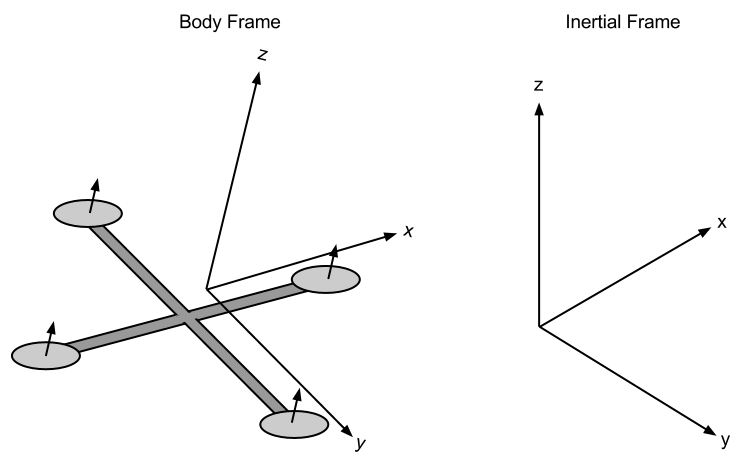
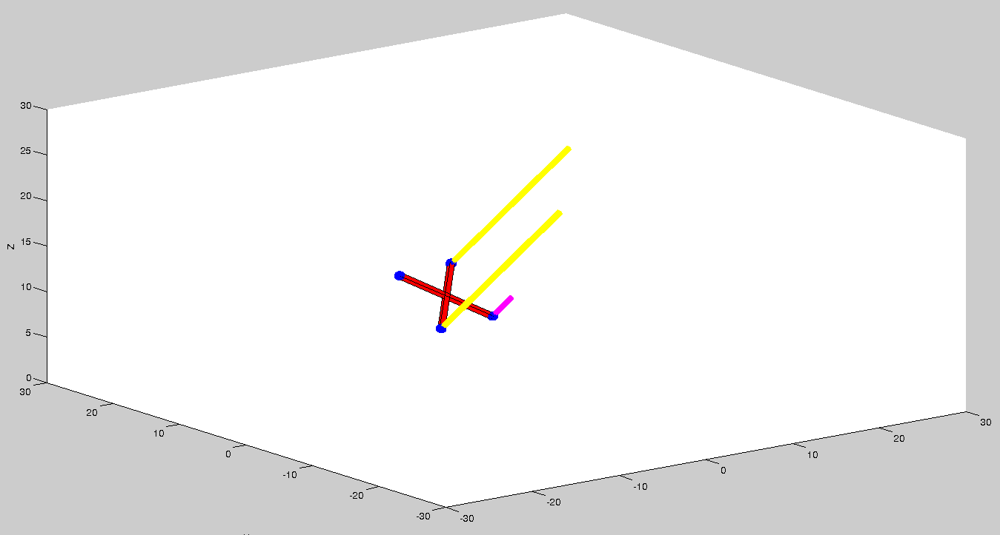
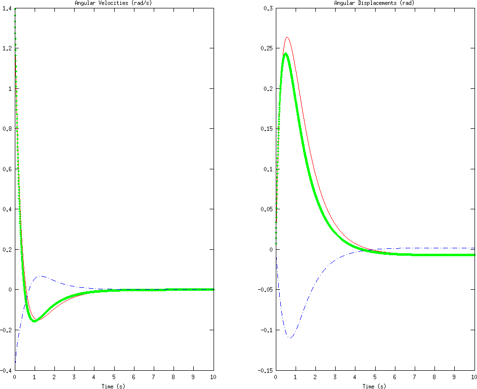
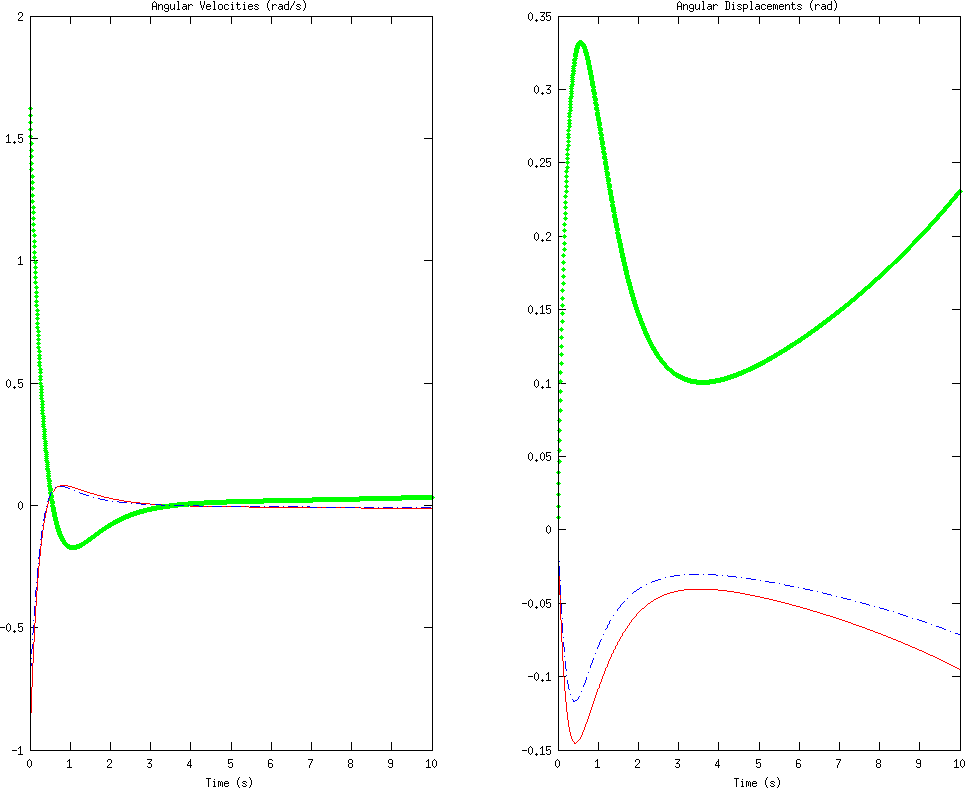
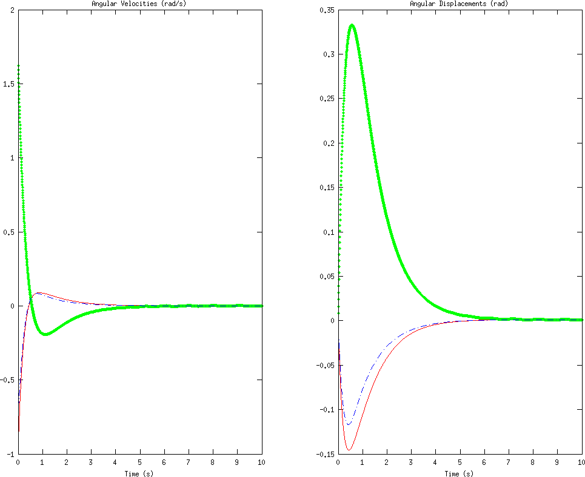
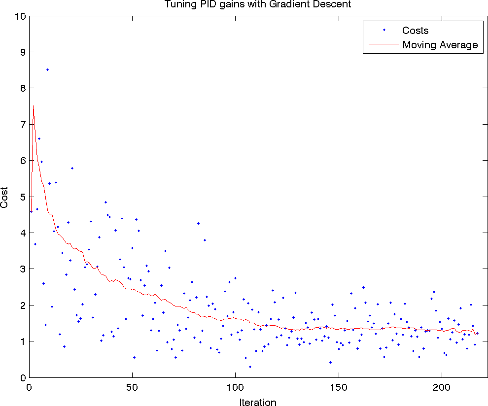
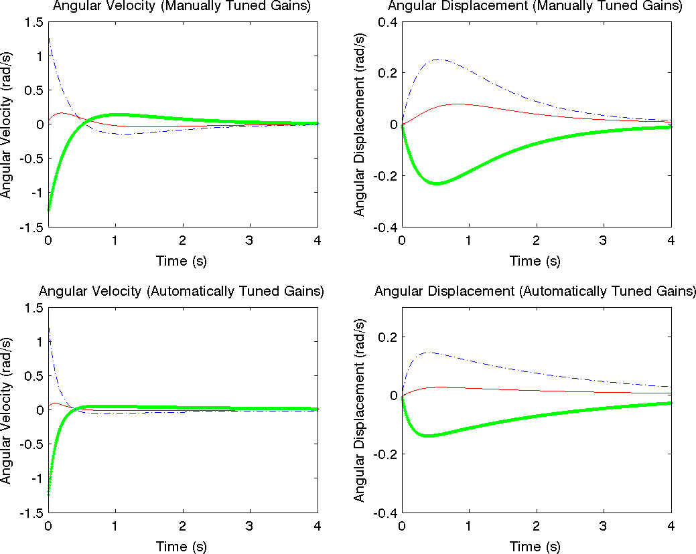

Introduction
A helicopter is a flying vehicle which uses rapidly spinning rotors to push air downwards, thus creating a thrust force keeping the helicopter aloft. Conventional helicopters have two rotors. These can be arranged as two coplanar rotors both providing upwards thrust, but spinning in opposite directions (in order to balance the torques exerted upon the body of the helicopter). The two rotors can also be arranged with one main rotor providing thrust and a smaller side rotor oriented laterally and counteracting the torque produced by the main rotor. However, these configurations require complicated machinery to control the direction of motion; a swashplate is used to change the angle of attack on the main rotors. In order to produce a torque the angle of attack is modulated by the location of each rotor in each stroke, such that more thrust is produced on one side of the rotor plane than the other. The complicated design of the rotor and swashplate mechanism presents some problems, increasing construction costs and design complexity.
A quadrotor helicopter (quadcopter) is a helicopter which has four equally spaced rotors, usually arranged at the corners of a square body. With four independent rotors, the need for a swashplate mechanism is alleviated. The swashplate mechanism was needed to allow the helicopter to utilize more degrees of freedom, but the same level of control can be obtained by adding two more rotors.
The development of quadcopters has stalled until very recently, because controlling four independent rotors has proven to be incredibly difficult and impossible without electronic assistance. The decreasing cost of modern microprocessors has made electronic and even completely autonomous control of quadcopters feasible for commercial, military, and even hobbyist purposes.
Quadcopter control is a fundamentally difficult and interesting problem. With six degrees of freedom (three translational and three rotational) and only four independent inputs (rotor speeds), quadcopters are severely underactuated. In order to achieve six degrees of freedom, rotational and translational motion are coupled. The resulting dynamics are highly nonlinear, especially after accounting for the complicated aerodynamic effects. Finally, unlike ground vehicles, helicopters have very little friction to prevent their motion, so they must provide their own damping in order to stop moving and remain stable. Together, these factors create a very interesting control problem. We will present a very simplified model of quadcopter dynamics and design controllers for our dynamics to follow a designated trajectory. We will then test our controllers with a numerical simulation of a quadcopter in flight.
Quadcopter Dynamics
We will start deriving quadcopter dynamics by introducing the two frames in which will operate. The inertial frame is defined by the ground, with gravity pointing in the negative direction. The body frame is defined by the orientation of the quadcopter, with the rotor axes pointing in the positive direction and the arms pointing in the and directions.

Quadcopter Body Frame and Inertial Frame
Kinematics
Before delving into the physics of quadcopter motion, let us formalize the kinematics in the body and inertial frames. We define the position and velocity of the quadcopter in the inertial frame as and , respectively. Similarly, we define the roll, pitch, and yaw angles in the body frame as , with corresponding angular velocities equal to . However, note that the angular velocity vector . The angular velocity is a vector pointing along the axis of rotation, while is just the time derivative of yaw, pitch, and roll. In order to convert these angular velocities into the angular velocity vector, we can use the following relation:
We can relate the body and inertial frame by a rotation matrix which goes from the body frame to the inertial frame. This matrix is derived by using the ZYZ Euler angle conventions and successively “undoing” the yaw, pitch, and roll.
Physics
In order to properly model the dynamics of the system, we need an understanding of the physical properties that govern it. We will begin with a description of the motors being used for our quadcopter, and then use energy considerations to derive the forces and thrusts that these motors produce on the entire quadcopter. All motors on the quadcopter are identical, so we can analyze a single one without loss of generality. Note that adjacent propellers, however, are oriented opposite each other; if a propeller is spinning “clockwise”, then the two adjacent ones will be spinning “counter-clockwise”, so that torques are balanced if all propellers are spinning at the same rate.
Motors
Brushless motors are used for all quadcopter applications. For our electric motors, the torque produced is given by
Forces
The power is used to keep the quadcopter aloft. By conservation of energy, we know that the energy the motor expends in a given time period is equal to the force generated on the propeller times the distance that the air it displaces moves (). Equivalently, the power is equal to the thrust times the air velocity ().
In addition to the thrust force, we will model friction as a force proportional to the linear velocity in each direction. This is a highly simplified view of fluid friction, but will be sufficient for our modeling and simulation. Our global drag forces will be modeled by an additional force term
Torques
Now that we have computed the forces on the quadcopter, we would also like to compute the torques. Each rotor contributes some torque about the body axis. This torque is the torque required to keep the propeller spinning and providing thrust; it creates the instantaneous angular acceleration and overcomes the frictional drag forces. The drag equation from fluid dynamics gives us the frictional force:
The model we’ve derived so far is highly simplified. We ignore a multitude of advanced effects that contribute to the highly nonlinear dynamics of a quadcopter. We ignore rotational drag forces (our rotational velocities are relatively low), blade flapping (deformation of propeller blades due to high velocities and flexible materials), surrounding fluid velocities (wind), etc. With that said, we now have all the parts necessary to write out the dynamics of our quadcopter.
Equations of Motion
In the inertial frame, the acceleration of the quadcopter is due to thrust, gravity, and linear friction. We can obtain the thrust vector in the inertial frame by using our rotation matrix to map the thrust vector from the body frame to the inertial frame. Thus, the linear motion can be summarized as
Simulation
Now that we have complete equations of motion describing the dynamics of the system, we can create a simulation environment in which to test and view the results of various inputs and controllers. Although more advanced methods are available, we can quickly write a simulator which utilizes Euler’s method for solving differential equations to evolve the system state. In MATLAB, this simulator would be written as follows.
% Simulation times, in seconds.
start_time = 0;
end_time = 10;
dt = 0.005;
times = start_time:dt:end_time;
% Number of points in the simulation.
N = numel(times);
% Initial simulation state.
x = [0; 0; 10];
xdot = zeros(3, 1);
theta = zeros(3, 1);
% Simulate some disturbance in the angular velocity.
% The magnitude of the deviation is in radians / second.
deviation = 100;
thetadot = deg2rad(2 * deviation * rand(3, 1) - deviation);
% Step through the simulation, updating the state.
for t = times
% Take input from our controller.
i = input(t);
omega = thetadot2omega(thetadot, theta);
% Compute linear and angular accelerations.
a = acceleration(i, theta, xdot, m, g, k, kd);
omegadot = angular_acceleration(i, omega, I, L, b, k);
omega = omega + dt * omegadot;
thetadot = omega2thetadot(omega, theta);
theta = theta + dt * thetadot;
xdot = xdot + dt * a;
x = x + dt * xdot;
endWe would then need functions to compute all of the physical forces and torques.
% Compute thrust given current inputs and thrust coefficient.
function T = thrust(inputs, k)
% Inputs are values for ${\omega_i}^2$
T = [0; 0; k * sum(inputs)];
end
% Compute torques, given current inputs, length, drag coefficient, and thrust coefficient.
function tau = torques(inputs, L, b, k)
% Inputs are values for ${\omega_i}^2$
tau = [
L * k * (inputs(1) - inputs(3))
L * k * (inputs(2) - inputs(4))
b * (inputs(1) - inputs(2) + inputs(3) - inputs(4))
];
end
function a = acceleration(inputs, angles, xdot, m, g, k, kd)
gravity = [0; 0; -g];
R = rotation(angles);
T = R * thrust(inputs, k);
Fd = -kd * xdot;
a = gravity + 1 / m * T + Fd;
end
function omegadot = angular_acceleration(inputs, omega, I, L, b, k)
tau = torques(inputs, L, b, k);
omegaddot = inv(I) * (tau - cross(omega, I * omega));
endWe would also need values for all of our physical constants, a function to compute the rotation matrix , and functions to convert from an angular velocity vector to the derivatives of roll, pitch, and yaw and vice-versa. These are not shown. We can then draw the quadcopter in a three-dimensional visualization which is updated as the simulation is running.

Quadcopter Simulation. Bars above each propeller represent, roughly, relative thrust magnitudes.
Control
The purpose of deriving a mathematical model of a quadcopter is to assist in developing controllers for physical quadcopters. The inputs to our system consist of the angular velocities of each rotor, since all we can control is the voltages across the motors. Note that in our simplified model, we only use the square of the angular velocities, , and never the angular velocity itself, . For notational simplicity, let us introduce the inputs . Since we can set , we can clearly set as well. With this, we can write our system as a first order differential equation in state space. Let be the position in space of the quadcopter, be the quadcopter linear velocity, be the roll, pitch, and yaw angles, and be the angular velocity vector. (Note that all of these are 3-vectors.) With these being our state, we can write the state space equations for the evolution of our state.
PD Control
In order to control the quadcopter, we will use a PD control, with a component proportional to the error between our desired trajectory and the observed trajectory, and a component proportional to the derivative of the error. Our quadcopter will only have a gyro, so we will only be able to use the angle derivatives , , and in our controller; these measured values will give us the derivative of our error, and their integral will provide us with the actual error. We would like to stabilize the helicopter in a horizontal position, so our desired velocities and angles will all be zero. Torques are related to our angular velocities by , so we would like to set the torques proportional to the output of our controller, with . Thus,
This is a complete specification for our PD controller. We can simulate this controller using our simulation environment. The controller drives the angular velocities and angles to zero.

Left: Angular velocities. Right: angular displacements. , , are coded as red, green, and blue.
However, note that the angles are not completely driven to zero. The average steady state error (error after 10 seconds of simulation) is approximately 0.3. This is a common problem with using PD controllers for mechanical systems, and can be partially alleviated with a PID controller, as we will discuss in the next section.
In addition, note that since we are only controlling angular velocities, our positions and linear velocities do not converge to zero. However, the position will remain constant, because we have constrained the total vertical thrust to be such that it keeps the quadcopter perfectly aloft, without ascending or descending. However, this is really nothing more than a curiosity. With the limited sensing that we have available to us, there is nothing we can do to control the linear position and velocity of the quadcopter. While in theory we could compute the linear velocities and positions from the angular velocities, in practice the values will be so noisy as to be completely useless. Thus, we will restrict ourselves to just stabilizing the quadcopter angle and angular velocity. (Traditionally, navigation is done by a human, and stabilization is there simply to make control easier for the human operator.)
We have implemented this PD control for use in our simulation. The controller is implemented as a function which is given some state (corresponding to controller state, not system state) and the sensor inputs, and must compute the inputs and the updated state. The code for a PD control follows.
% Compute system inputs and updated state.
% Note that input = [$\gamma_1$, $\ldots$, $\gamma_4$]
function [input, state] = pd_controller(state, thetadot)
% Controller gains, tuned by hand and intuition.
Kd = 4;
Kp = 3;
% Initialize the integral if necessary.
if ~isfield(state, 'integral')
params.integral = zeros(3, 1);
end
% Compute total thrust
total = state.m * state.g / state.k / (cos(state.integral(1)) * cos(state.integral(2)));
% Compute errors
e = Kd * thetadot + Kp * params.integral;
% Solve for the inputs, $\gamma_i$
input = error2inputs(params, accels, total);
% Update the state
params.integral = params.integral + params.dt .* thetadot;
endPID Control
PD controllers are nice in their simplicity and ease of implementation, but they are often inadequate for controlling mechanical systems. Especially in the presence of noise and disturbances, PD controllers will often lead to steady state error. A PID control is a PD control with another term added, which is proportional to the integral of the process variable. Adding an integral term causes any remaining steady-state error to build up and enact a change, so a PID controller should be able to track our trajectory (and stabilize the quadcopter) with a significantly smaller steady-state error. The equations remain identical to the ones presented in the PD case, but with an additional term in the error:

In some cases, integral wind-up can cause lengthy oscillations instead of settling. In other cases, wind-up may actually cause the system to become unstable, instead of taking longer to reach a steady state.
If there is a large disturbance in the process variable, this large disturbance is integrated over time, becoming a still larger control signal (due to the integral term). However, even once the system stabilizes, the integral is still large, thus causing the controller to overshoot its target. It may then begin a series of dieing down oscillations, become unstable, or simply take an incredibly long time to reach a steady state. In order to avoid this, we disable the integral function until we reach something close to the steady state. Once we are in a controllable region near the desired steady state, we turn on the integral function, which pushes the system towards a low steady-state error.

With a properly implemented PID, we achieve an error of approximately 0.06 after 10 seconds.
We have implemented this PID control for use in simulation, in the same way as with the PD controller shown earlier. Note that there is an additional parameter to tune in a PID. The disturbances used for all the test cases are identical, shown to compare the controllers.
% Compute system inputs and updated state.
% Note that input = [$\gamma_1$, $\ldots$, $\gamma_4$]
function [input, state] = pid_controller(state, thetadot)
% Controller gains, tuned by hand and intuition.
Kd = 4;
Kp = 3;
Ki = 5.5;
% Initialize the integral if necessary.
if ~isfield(state, 'integral')
params.integral = zeros(3, 1);
params.integral2 = zeros(3, 1);
end
% Prevent wind-up
if max(abs(params.integral2)) > 0.01
params.integral2(:) = 0;
end
% Compute total thrust
total = state.m * state.g / state.k / (cos(state.integral(1)) * cos(state.integral(2)));
% Compute errors
e = Kd * thetadot + Kp * params.integral - Ki * params.integral2;
% Solve for the inputs, $\gamma_i$
input = error2inputs(params, accels, total);
% Update the state
params.integral = params.integral + params.dt .* thetadot;
params.integral2 = params.integral2 + params.dt .* params.integral;
endAutomatic PID Tuning
Although PID control has the potential to perform very well, it turns out that the quality of the controller is highly dependent on the gain parameters. Tuning the parameters by hand may be quite difficult, as the ratios of the parameters is as important as the magnitudes of the parameters themselves; often, tuning parameters requires detailed knowledge of the system and an understanding of the conditions in which the PID control will be used. The parameters we chose previously were tuned by hand for good performance, simply by running simulations with many possibly disturbances and parameter values, and choosing something that worked reasonably well. This method is clearly suboptimal, not only because it can be very difficult and labor-intensive (and sometimes more or less impossible) but also because the resulting gains are not in any way guaranteed to be optimal or even close to optimal.
Ideally, we would be able to use an algorithm to analyze a system and output the “optimal” PID gains, for some reasonable definition of optimal. This problem has been studied in depth, and many methods have been proposed. Many of these methods require detailed knowledge of the system being modeled, and some rely on properties of the system, such as stability or linearity. The method we will use for choosing our PID parameters is a method known as extremum seeking.
Extremum seeking works exactly as the name implies. We define the “optimal” set of parameters as some vector which minimizes some cost function . In our case, we would like to define a cost function that penalizes high error and error over extended durations of time. One candidate cost function is given by
The question remains as to how we can estimate . By definition,
The gradient descent method does, however, have several problems. First of all, although it finds a local minimum, that minimum is only guaranteed to be a local minimum - there may be other minima which are better global minima. In order to avoid choosing suboptimal local minima in the cost function, we repeat our optimization several times, and choose the best result. We initialize our PID parameters randomly, so each time we run the optimization we will get a different result. In addition, instead of choosing disturbance and then optimizing the response to that disturbance, we use several random disturbances at each iteration and use the average response to compute costs and gradients. This ensures that our parameters are general and not optimized for a specific disturbance. In addition, we vary the step size and the number of disturbances to try per iteration, in order to increase the sensitivity of our results as our iteration continues. We stop iterations when we detect a steady state, which we do by computing a linear regression on the most recent costs and iterating until the slope is statistically indistinguishable from zero using a 99% confidence interval.
Using our quadcopter simulation, we can define a function that computes the cost for a given set of PID parameters.
function J = cost(theta)
% Create a controller using the given gains.
control = controller('pid', theta(1), theta(2), theta(3));
% Perform a simulation.
data = simulate(control);
% Compute the integral, $\frac{1}{t_f - t_0} \int_{t_0}^{t_f} e(t)^2 dt$
t0 = 0;
tf = 1;
J = 1/(tf - t0) * sum(data.theta(data.t >= t0 & data.t <= tf) .^ 2) * data.dt;
endWe can use this function to approximate a derivative with respect to a gain:
% Compute derivative with respect to first parameter.
delta = 0.01;
var = [1, 0, 0];
derivative = (cost(theta + delta * var) - cost(theta - delta * var)) / (2 * delta);We can then use our gradient descent method (with all modifications described above) to minimize the cost function and obtain a good set of PID parameters. We can verify that our tuning method is working by visualizing the cost function versus the iteration number, and seeing that the cost function is indeed going down and stabilizing at a local minimum.

Cost function plotted as a function of iteration number, along with moving average. Tuning stops when the slope of the moving average becomes statistically indistinguishable from zero with a 99% confidence interval.
We can compare the manually-chosen PID parameters with those designed by the algorithm.

Top: Angular velocities and angular displacements, using manually tuned PID controller. Bottom: Angular velocities and angular displacements, using automatically tuned PID controller.
The automatically-chosen PID parameters do significantly better overall. They have significantly smaller swings in value, overshoot significantly less, and converge faster. However, the error in the angular displacement takes longer to converge to zero with the automatically tuned parameters than with the manually turned parameters, although the initial convergence is much better when the parameters are chosen via gradient descent. This is due to the fact that our cost function emphasizes squared error, and thus gives priority to minimizing overall error magnitude rather than long-term convergence. We could easily modify our cost function to give higher priority to long-term error, in which case the automatically-tuned parameters are likely to do better.
Conclusion
We derived equations of motion for a quadcopter, starting with the voltage-torque relation for the brushless motors and working through the quadcopter kinematics and dynamics. We ignored aerodynamical effects such as blade-flapping and non-zero free stream velocity, but included air friction as a linear drag force in all directions. We used the equations of motion to create a simulator in which to test and visualize quadcopter control mechanisms.
We began with a simple PD controller. Although the PD controller worked, it left a significant steady-state error. In order to decrease the steady-state error, we added an integral term in order to create a PID controller. We tested the PID controller (with minor modifications to prevent integral wind-up) and found that it was better at preventing steady-state error than the PD controller when presented with the same disturbances and using the same proportional and derivative gains. We also found that tuning the PID controller was difficult, and would often lead to an unstable system for unknown reasons. In order to avoid the difficulty of PID tuning and find the optimal set of parameters, we used a gradient-descent based extremum seeking method in order to numerically estimate gradients of a cost function in PID-parameter space and iteratively choose a set of parameters to minimize the cost function. We found that the resulting controller was significantly better than the one using manually turned parameters.